As much as some people only queue for warzones to farm solo kills or good-looking numbers on the scoreboard, warzones are not won by kills or the highest DPS/HPS, but by playing for objectives. (Which does not mean good DPS/HPS isn't welcome, or even required in some cases. But you need to have absolutely superior numbers and even then care a little to win by number farming.)
While objectives have some minor differences in how they work from warzone to warzone, in general they are all very similar.
Most objectives are captured by right-clicking their respective control objects: this initiates a channel, at the end of which, if not interrupted, the objective is taken for your team. Interrupting is possible by simply attacking the person trying to capture with any direct or channeled AoE attack. It does not matter how much damage your attack does; simply getting attacked is enough to be interrupted. Also because of this you usually need some clear air around objectives to be able to take them, or at least stun the people there so they cannot attack. (Some teams will just let you capture behind their back and don't even look that way. Their loss.)
As objective captures are abilities behind the scenes, they are subject to regular interrupt lockouts, too. Interrupting someone with the dedicated interrupt skill prevents them from retrying for 4 seconds. Because of this, it's a good idea to use your interrupt immediately after your CC breaker if you're not whitebarred. This way, if you get mezzed again, your attacker is screwed and they just gave you a free whitebar.
Warzone
Mechanic
Channel time
Interruptibe by attack
Civil War
Turret capture
8 s
Yes
Yavin Ruins
Turret Capture
8 s
Yes
Yavin Ruins
Turret Capture with Fast Capture mod
4 s
Yes
Hypergates
Pylon capture
6 s
Yes
Hypergates
Orb pickup
5 s
Yes
Huttball
Ball pickup
Instant
No
Novare Coast
Turret capture
12 s (3 s warmup, incremental)
Yes
Odessen
Objective capture
3 s (no clicking)
No
Odessen
Mod pickup
Instant (no clicking)
No
Odessen
Mod use
3 s
No
Voidstar
Plant/open
6 s
Yes
Note that periodic damage effects (DoTs) do not interrupt captures, nor do any attacks that only deal periodic damage. If you're playing a, say, Operative, and you put Corrosive Dart on a target, it will not interrupt whatever they're doing. This includes non-channelled ground target AoE DoTs.
Guarding
Because already captured objectives can be lost if an enemy goes and captures them, it's necessary to have someone on guard to interrupt capture attempts and warn the team. Guarding is one of the least thankful things you can do in any warzone: you'll spend most of the match just standing there doing nothing with a good chance you'll be assaulted by multiple people at once, and you can singlehandedly lose the game for your entire team.
Two things are expected from guards: call incomings and being able to defend until reinforcements arrive. Calling incomings is done in ops chat, you can type "2 lab" if two enemies are attacking the lab in Odessen, "1w" if there's a single guy at the western door in Voidstar, etc. Your team might respond quickly or not respond at all (which, sadly, happens), but you should survive reasonably long enough for help to arrive. Sometimes this is easy, other times… not quite. Call as early as possible to give the others time to get there. Calling when you're dead or two hits away from it is useless. If you do not feel comfortable guarding alone, you can always ask for someone to swap with you, or, as a last resort, you can guard with 2 people.
While this can be categorized as "greed" below, I find it important to emphasize that you should, when guarding, always watch the objective. Lots of people make very bad guards because when they see some red, they go chasing it. It's easy to lure these people away from the objective while a stealther goes for the cap and CC them so they are unable to get back in time. Do not get lured away.
Countering sapcaps
If you compare the table of warzone mechanics to the table of incapacitating effects (or just guard a few times in the game), you will soon come to realize that having an objective stolen from you isn't that hard at all. Even the longest objective capture only takes 8 seconds, and 5 of the 8 classes have CC that last that long. Using these they can take the node you're guarding without hitting you for a single point of health, so be careful.
When it comes to sapcapping, stealthers make dangerous opponents: first, they have multiple 8 seconds mezzes available to them (Mind Trap/Whirlwind, Sleep Dart/Flash Bang), and you cannot see them approaching. While I have sapcapped quite a few people on my Corruption Sorcerer too, it's not that hard to defend against, as you can see it coming, call for help, and the mezzes have a relatively (1 minute or somewhat less) long cooldown anyway.
As a defender, you have 2 tools to prevent being sapcapped: range and line of sight.
Using range
Both Mind Trap and Sleep Dart have a 10 meter range, while your ranged attacks can be used from 30 meters. After using their CC from stealth on you, it takes them time to get back to the objective to start capturing it, during which their CC on you is already ticking and expiring. The farther you stay from the objective, the longer it will take them to get back and the later they can start capturing, meaning you will have more time to interrupt their attempt.
If you play a Sorcerer, you can guard far away from the objective while keeping your Phase Walk in range. This way you can teleport back fast if something needs interrupting. Powertechs can stand right there and use Shoulder Cannon.
Do not, ever, stand within 10 meters of an objective that can be sapcapped, unless you either a) have some immunity to incapacitating effects or can interrupt while incapacitated, b) are certain all their mezzes are on cooldown, c) have no other choice. Let this stand as a reminder why you need to keep to this rule:
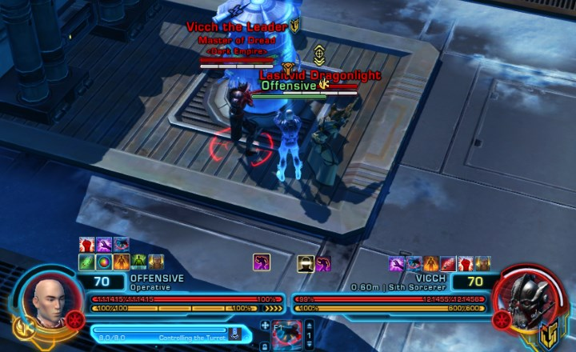
Sorcerer and Sniper both getting capped with an AoE Flash Bang because they positioned themselves badly. These two are some of the best classes to defend with.
Using line of sight
Using any CC requires a clear line of sight, meaning there can be no objects between the attacker and their target. If you cannot keep range, at least make sure the attacker has to chase you behind cover to CC. This is related to the previous point: your goal is to make them waste time, lure them away from the objective and if they do CC you make them be late by the time they get back.
Breakers are not enough
Any stealther can mez you for 8 seconds twice in a row, then, once your resolve expires, vanish and mez you again for 8 seconds and if you used your breaker, they will be able to use their in-combat mez for a second time before your breaker is off cooldown. In general, CC is abundant, breakers are not. If you have to use your breaker, you also have to anticipate how to not get CC'ed immediately afterwards, this time with no escape. Not all classes can hold out for the same time, but in any case you do need to plan ahead.
When it comes to using breakers, you have to know exactly how long various mechanics take and pay a lot of attention to timing. We're talking about tenths of seconds accuracy here. If you see a stealther mezzing you but failing to start capturing immediately, if he's within your line of sight, you can usually interrupt without using a breaker. If you cannot attack directly, you have to consider whether the delay time difference will provide you with enough time to interrupt. This is a game that can only be learned properly by playing and failing it.
Dying and using defensives
Nobody likes to die, we get it. But sometimes you will, and most warzones do not punish dying too harshly. What I see lots of people do is that they blow all their defensive cooldowns before dying, just to respawn with nothing. Unless it's an Arena, you don't have to use everything you have up if your team can hold out on their own while you respawn.
Combat resurrection
As unused as this possibility is (I must admit being guilty of almost never using it myself), you can use combat resurrection in every warzone except Arenas. Sometimes reviving a fallen tank as a healer and not having to wait for them to run back can save your objective, or the game. The usual caveats of in-combat resurrection apply.
Powerups
All the objective maps have some powerups lying around that can help you survive. Powerups respawn after a while.
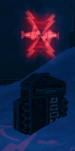
Overcharge Power: 15% bonus to damage and healing for 25 seconds.
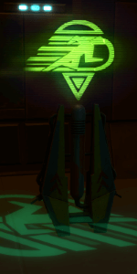
Speed Boost: Increases your movement speed to 200% for 15 seconds.
Medals
Medals are a simple way of rewarding objectively measurable performance in warzones. Most medals are easily obtainable by performing basic things, like hitting an enemy for a certain damage. (Each medal can only be earned once per game.) The reason why I bothered to mention them is to also note that the number of medals you get in a march does not, in any way, determine whether you are a good player or not. There's a minimal extra valor reward, but this is capped at 8 medals. Also, if you get 8, 14 or 18 medals in one life, you are announced as being Unbeatable, Invincible or Immortal, respectively. These "titles" don't have any benefits.
The scoreboard
At the end of each match you are shown a scoreboard with some of the numeric performance of each of your teammates. Beyond the defaults shown, hovering over values reveals more and often more important values about the player. For example, hovering over one's damage shows you their DPS, which is a lot better measure of one's performance than total damage done, as it doesn't depend on the length of the warzone (and even takes into consideration if the player was a backfill).
Scoreboard numbers can give you a relatively good idea about each of your mates' performance, but it is by no means complete. A node guard, for example, can have 0 of everything and only a marginal amount of objective points, yet they were standing there, bored, guarding for your team the entire time. (Or they were AFK and got lucky. You'll never know.)
It's very hard to give an objective measure of what's valuable in a warzone. High DPS/HPS/Protection is mostly better than low, but then again, someone offnoding and/or guarding the whole time might have won the match for you, despite them having low damage. Award your MVP to whoever you think contributed the most - whether it be by playing objectives, keeping you alive or clearing out your enemies.
Deserter detection
Deserter Detection is an automatic mechanic that tries to force you to participate in games. You get a debuff in the spawn areas that stays on you until you leave them. If you refuse to do so, eventually you'll get kicked from the warzone.
Respawn time
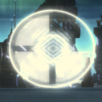
Most warzones have their respawn areas guarded by a forcefield that opens every now and then, letting people back into the mayhem. Not all warzones have the same respawn limit. What is common in them, though, is that the forcefields have a visible countdown timer on them (see the attached figure on the right). The number of filled quarters represent the time remaining (rounded up to one quarters of the full waiting time) before the door opens again. When you see recently resurrected people calling out like "2 ticks" in chat, this is what they mean.
In Civil War/Yavin Ruins there is no spawn barrier, what you have instead is a ~13 second speeder ride you have to take to get back down. Odessen also has no spawn barriers. Respawns happen in timed waves, when everyone that has fallen is revived automatically.
Greed as a losing strategy
This has many manifestation in warzones, but take this advice to the heart, as it's the single most important strategic advice I can give you: do not be greedy. Sometimes you cannot hold all 3 objectives, and sometimes you cannot claim that kill you so much long for. Being a good PvP'er also includes knowing when to retreat and hold what you have. Countless times I have lost warzones with otherwise good teammates because they got greedy in some way, overextended and eventually caused a loss.
Stealth play
The basics
Let me start with some statistics: in my humble, totally non-representative opinion, over 95% of the players queueing for warzones do not understand the importance, the whys and why nots of stealth play. If there's anything you learn from this guide, let it be this sentence: Do not help stealthers unless they explicitly ask you to.
Let me explain. The whole point of stealth play is that, if done successfully, allows a stealther to avoid having to fight for objectives and steal them while simply stunlocking the guard. But this has some strict timing requirements and any mistakes made are more likely than not going to needlessly cause you to take longer or to outright fail.
There are multiple factors that make this kind of play effective. One is the element of surprise: the defender doesn't know you're coming. You approach them while totally invisible and strike whenever it's appropriate for you. If you're not a stealther and decide to "help", the very first thing you're going to be doing is drawing attention. Even if the guard only sees you approaching, they will call for help. This alone gives a noticeable advantage to the defenders.
Then there's the need for being out of combat. Both Sleep Dart and Mind Traprequire the target to be out of combat. Even if they cannot catch the guard at the start, they can vanish and then use their mezzes. If you are there "helping" and keeping the guard in a fight, you make this impossible.
Third, most caps require precisely timed mezzes to pull off properly. Now this short phrase has two things in it that can go wrong: precisely timed and mezzes.
Mezzes are kinds of incapacitation that break on any damage taken. If you put a DoT on the guard, it breaks mezzes. If you keep attacking, it also breaks mezzes. Almost everything you can possibly do breaks mezzes.
Then there's the precise timing. You can't just keep a guard locked down for an arbitrary amount of time, because at one point Resolve kicks in. Also the longest mezzes last 8 seconds, the exact same amount as needed to steal the objective. Any time wasted, even if just tenths of seconds, works against you. If you use any CC while someone is not capping, you've ruined it. It is very, very rare that 2 (or more) uncoordinated people can successfully do a sapcap against a knowledgeable guard.
Stalling vs. stealing
Stalling is the act of preventing the enemy team from taking some objective for themselves, leaving it in its original, neutral state. Stealing, on the other hand, is when you not only not let them cap, but also take the node for yourself. Notice the difference between the two: in the first case the objective remains neutral, in the second it will be scoring for you.
I cannot really attribute the popularity of stalling to anything but the wrong example set by some popular people. While stalling a pylon for an entire round does indeed look like professional play, as far as objectives are concerned, it's a pretty stupid thing to do.
Basically, the only case when stalling is required, is when you are certain you won't be able to take the node from the guard later or when you're so close to losing the warzone that you cannot risk it. If it looks like you'll be able to steal it later, it's better to let them take it at the beginning and then capture it, than pointlessly charge into a 2 or 3 vs 1.
With that said, unless you explicitly want to stall, just using Sleep Dart or Mind Trap and not even attempting to take the node is one of the most stupid things you can do when offnoding. Not only is it completely pointless, it also alerts the defender, gives them time to call and finally fills up their Resolve.
Timing and positioning
The maps that provide opportunities for this sapcap kind of stealth play are ACW, YR, AHG and VS, though all do it a little differently.
First of all, as I've no doubt mentioned this in other parts of this guide, if you're quick enough to utilize the full duration of a mez, and you do not get interrupted otherwise, it provides just enough time to pull the cap off. If you delay even a little bit, you are just giving time for the defender to interrupt. One way of doing a sapcap is, if you're fast, doing it right in line of sight. Unless you makes a mistake, any delay will cause you to fail, so do this only if you're fast enough. Sadly in VS and AHG only this kind of cap is possible, as there are no objects to provide line of sight near the objectives.
The following video should illustrate the difference between a correctly timed and a slow sapcap (and some bad positioning on my part):
Luckily in ACW/YR you can use your sap and quickly move behind the node to take it. While you will lose some time doing this, the fact that you're out of LoS makes interruptions tricky. Mercenaries are pretty good at this because Sweeping Blasters can be used to attack while out of LoS, other classes have a tougher time.
Dealing with stalling
Stealthers can turn most objective games a sour one if you do not know how to deal with them. A well played Concealment Operative can prevent a capture for an eternity against people that don't know how to deal with them. This is one place where the discipline really shines: their ability to interrupt from 30 meters range, Exfiltrate allowing them total immunity to everything for 1.5 seconds, their self-heals, damage mitigation and all-around mobility make a good one hard to pin down.
Forcing them out of stealth
While more experienced stealther will immediately reveal themselves and attempt to capture while having you knocked out or simply try to kill you, most of them will just stay in stealth and try to stall. You can of course try finding them with randomly spamming AoEs all over the place, but there's a good chance your hit rate against experienced stealthers will be very low. What you can do is use Resolve to your advantage: keep trying to capture. They can interrupt twice in a row, but after that you will have full resolve, and they will not be able to use CC on you anymore. They will have to reveal themselves and attack if you don't want to allow you to capture. The absolute worst thing you can ever do while being stalled by a stealther is to let yourself get interrupted twice, then, when you finally have full Resolve, start looking for them. Do not ever do that, instead, keep trying on the objective. You will still be interrupted, but they will have to reveal themselves to do that.
Taking them out of business
There are 2 ways to deal with a stealther. One is obvious: kill them. While this is easy if you have multiple people there, if you're alone they can drag the duel on for a pretty long time, esepcially Operatives. The other one involves the exact opposite: use their tools against them. Check the table about incapacitating effects above and see what you have access to. Both Operatives and Assassins have only one way to break incapacitation, so if one of you tries to capture and the other CC's the stealther, they will have no way to escape. Mistakes are punishing: if you use your CC while they have some immunity is up, you just wasted lots of time. Since most stealthers will try to run from cover to cover in order to hide from you (they aren't able to survive in the open for long), rooting them in place when they're not in line of sight to interrupt also works wonders.
If you have two people there from your team and you're being harrassed by one person, it's advisable that both of you keep trying to cap, forcing them to burn their opportunities to CC in stealth and giving you Resolve. When they finally reveal, one of you should keep spamming the capture, immediately retrying if interrupted, while the other goes to CC the offender. If they break (unless you screw it up, they will have to break), just switch around and let the other person CC. This makes short work of any annoying stealther.
Maps
In this section I'm going to go through each warzone type, trying to point out the most important do's and don'ts in them. Such a guide, as was said in the introduction, can never be fully comprehensive, anything written here does not replace situational awareness or plain common sense. Following these guidelines will, in general, help you become a better objective player, but you should still do your best to improve and think on your own.
Below is the list of the warzones you can find in the regular queue, with a short summary:
4vs4 Arenas (deathmatch maps, team with the last man standing wins):
Corellia Square
Makeb Mesa
Orbital Station
Tatooine Canyon
Rishi Cove
Mandalorian Battle Ring
8vs8 Warzones (objective-based maps, teams win based on scoring):
Ancient Hypergates (AHG): Round-based deathmatch with bases (pylons) required to be captured and held in order to score.
Alderaan Civil War / Yavin Ruins (ACW/YR): Team to destroy enemy base by holding objectives (turrets) first wins.
Huttball (HB): Carry-the-flag type of game where teams have to score 6 times to win.
Novare Coast (NC): Objective map with incremental and parallel capture mechanics. Teams only score while they hold at least 2 of the objectives.
Odessen Proving Grounds (OPG): King of the hill map with lots of randomness and stupid exploits.
The Voidstar (VS): Timed, forward-only race to complete the objective before the other team can.
Alderaan Civil War / Yavin Ruins
Aldreaan Civil War and Yavin Ruins are highly similar warzones with a few minor differences besides their visual setting.
The map & objectives
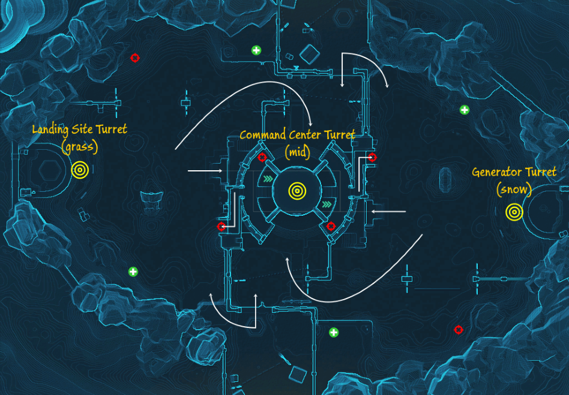
There are 3 turrets on each map, one to the left, one in the middle area and one to the right. The map is designed in a way that the left turret is somewhat closer to the spawn than the right one (only slightly closer, though), with the middle one being fully symmetrical. In Alderaan, the side turrets are usually referred to as "snow" and "grass", not as east and west. If you wonder how these names came to be: "snow" (the eastern turret) has a snowy area around it, while "grass" (the western one) is on a sunny and grassy terrain. Turrets are captureable by interacting uninterrupted for 8 seconds with their respective control nodes.
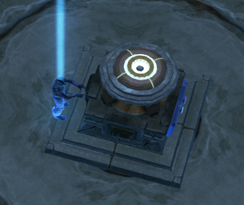
Capturing a turret from the back in Yavin Ruins.
In Civil War the full turret control object is clickable; in Yavin, however, it only has a small panel on its side for interaction. Despite this design, the panel can be clicked from a long enough distance that capturing from the opposite side of the object is still possible. The turret controls themselves, on both maps, provide opportunities for breaking line of sight.
In the Civil War map the sides of the middle structure are exit-only, as they require you to drop down and not be able to come back up without going back all the way to the spawn areas. In Yavin Ruins, however, this part has been changed to have stairs, which allow quickly getting back to the middle from the sides. The most important directions of movement are marked on the annotated map with white arrows. There's a tunnel under the middle turret (gray line) which also has 2 speedup mods to help you get from one side to the other fast.
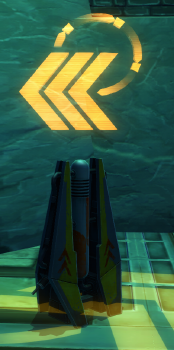
Pickup node of the Fast Capture mod.
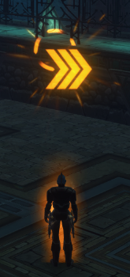
The character flair while carrying a Fast Capture mod.
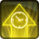
Fast Capture
Capture control points twice as fast.
A new addition to the Yavin map is the Fast Capture mod. These are pickup items like any other powerups, last for 75 seconds and decrease the time it takes to capture an objective by 50% (i.e. down to 4 seconds). What this means is that taking a turret with this mod is now possible under the duration of a standard hardstun. The mod (unlike those in Odessen) does not transfer to enemy players on death and is lost following a successful capture. Carrying the mod prevents the use of stealth.
Scoring
Both teams start with a score of 600 in Alderaan and 500 in Yavin, the first to lose them all (reaching 0 points) loses. At the start of the match all 3 turrets are inactive: they do not score for either team and are displayed as grey on the scorecard. Turrets becomes active when they first get captured and cannot be deactivated: once someone takes them, they remain active for the rest of the match. They start firing 10 seconds after coming online, which does not reset on further changes of ownership. Turret activation times can be important: the turrets are not syncronized, they do not fire at the same time. If the warzone happens to go in a way that only 1 turret gets captured (and held) by both teams and one remains inactive throughout the warzone, the outcome of the match depends on which team captured first. The Yavin turrets hit for 2 points every 4 seconds, while the Alderaan ones do 12 points of damage every 20 seconds.
In Yavin Ruins kills are an additional source of points besides having control of the turrets, as dying is further punished by the deduction of 2 points from the team's score. While this alone is not enough to change a completely lopsided match, it can easily decide who the victor will be in otherwise close, but still decided matches.
The half-score rule
Once one team's score falls below half of that of the other team, the match is pretty close to being decided, because from that point the leading team will only have to hold one turret to win: definitely not impossible requirement. The outcome isn't technically decided at that point, because the team lagging behind can capture all 3 turrets and win, but this turn of events is quite rare. Most of the time if you have at least double the score of your enemies, enjoy your win. You might also want to consider whether taking a 2nd node or preventing the capture of the 3rd one is worth it, as there's only a marginal chance you'll be able to turn the tide with a triple capture and you're only wasting everyone's time otherwise.
Strategy
Your team's ultimate goal is to hold at least 2 turrets throughout most of the match. Because all turrets function the same way, it does not matter which 2, but because the left one is closer to the respawn point than the right one (again, the difference isn't too big), most groups go for the left and the middle nodes in force, while letting a volunteering stealther go delay the right one. In a regular match, it's not necessary that you try to capture all nodes; it is mostly when it comes to premades vs. premades that letting the other team freely capture a node turns it into a winning advantage for them. Usual splits are 1-7-0, 1-6-1, 2-6-0 or 2-5-1 (the numbers meaning the number of people going left, mid and right, respectively), with the later two being more common if you expect the enemy team to try interfering with your capture.
Using Phase Walk
Phase Walk is an especially useful ability in Civil War, because the design of the map prevents getting from some points to others in a quick and efficient way (like from the side nodes back to the middle), requiring you to walk some extra miles. Sorcerers can cut this by using Phase Walk: if you are at a node you expect having to come back to, leave Phase Walk there, and you'll be able to teleport back there from anywhere within 60 meters.
Sapcaps
If you have forgotten since the general introduction, sapcaps are when a stealther uses their 8 second mezzes to incapacitate the guard while taking the objective. Let me reiterate, because lots of players think it's impossible: you can fully capture an objective under the duration of a mez. If the attacker is quick enough, there's no leftover time: even if you use an attack that hits the exact same moment you activate it, you'll be late.
In both maps the control objects themselves provide cover from line-of-sight, meaning the attacker can just run behind the objective and you'll not be able to directly attack them. This, however, is not necessary: if you position wrong, your attacker can just mez you directly and take your node, straight in front of your face. While they require stricter timing, direct sapcaps are a lot easier: when movement is involved, the attacker loses time while getting in position. The following video shows a quick example of how easy it is to lose a node if you're not using your toolset properly.
Sapcapping a Marauder in Civil War
Defending
Bad defenders get their guarded nodes taken away, and, like in other maps, it's important to know how to position properly for guarding. The turret controls themselves are large physical objects, providing line of sight and making it harder to interrupt captures.
The #1 rule of defending, here and elsewhere, is to avoid being close to the objective, unless you are whitebarred or have some other form of immunity. The reason for this is simple: both Assassins and Operatives have multiple 8 second mezzes, which, if utilized properly, allows them to capture your objective right in front of your nose. Remember that the range of stealth-only mezzes is 10 meters. The turret itself allows for a few meters when capturing, so keeping a ~15 meter distance is recommended.
As in general, when it comes to defending, do not use your CC breaker unless you have a good reason to do so. In objective play, that means do not use it unless you're definitely about to lose the node if you do not break. If you get sapped, but the stealther does not make any attempts to capture, do not use your breaker. They've just given you free resolve.
Interrupting with AoE
To be honest I do not know whether this is a bug or just some mechanic I do not fully understand, but you should be aware that AoE abilities with ground targeting ("placed AoE") do not always hit their target on the side platforms unless you're standing right on their surface. Even if you're on the stairs or on the ground and you can activate the ability, it will not deal any damage. This can easily lead to you losing an objective. For this very reason, try using single target abilities to interrupt, because they don't suffer from this problem.
Also, if you're attempting to use an AoE attack to interrupt, note that of the 3 ranged classes only Mercenaries' Sweeping Blasters do not have any delay on their damage. Snipers' main spammable AoE attack, Suppressive Fire starts ticking after 0.5 seconds, while Sorcerers' Force Storm needs a full second to first deal any damage. Because a successful capture can easily depend on tenths of seconds, failure to anticipate these delays can easily result in a lost objective.
Defending in Yavin, because of the Fast Capture mods, is a more challenging task than anything before. Since the nodes can be taken in only 4 seconds, this means almost every form of CC, including hardstuns and grenades, provide enough time to pull a capture off. Even though these mods disable one's ability to stealth, simply the number of stuns any class has available makes it nigh impossible for anyone alone to properly guard for an extended time against a competent player that carries this mod. Unless a stealther is available for guard duty, having 2 guards is recommended at any point, especially if they're not too experienced.
Ancient Hypergates
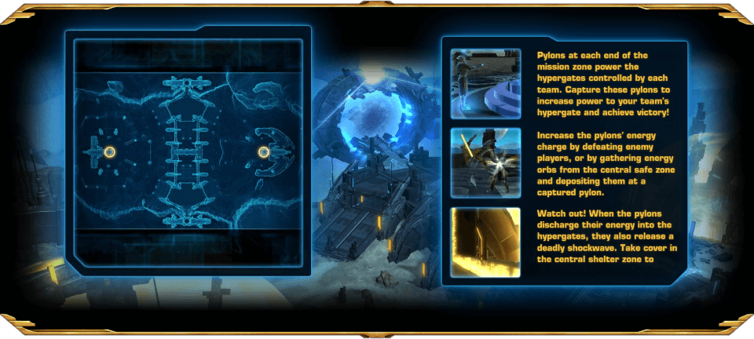
The map
The map of the AHG can roughly be divided into 3 regions, the western, eastern and central regions. While the terrain does differ a bit, the eastern and western parts of the map are relatively the same. Both sides hold one of the main objectives, a pylon (marked with yellow on the map), which much be taken and held by the end of the round for your team to gain points towards victory. The match is divided into rounds, each of which end with both the pylons exploding, even if they remain uncaptured. Everyone getting caught in the explosion dies instantly.
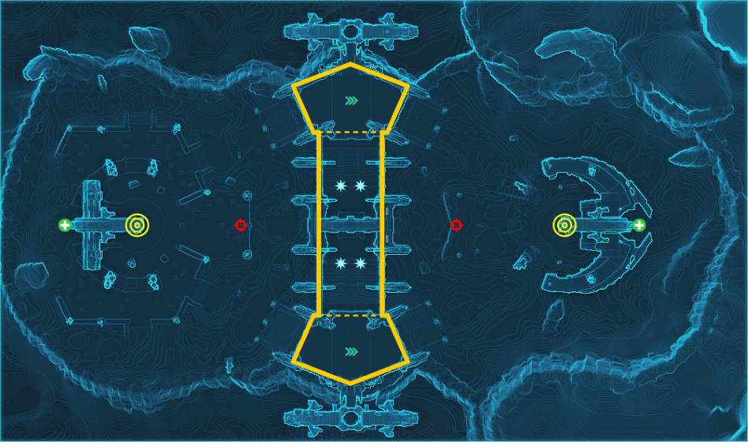
The central part of the map (marked with a thick yellow border) is where you can take shelter from the explosions: if you're in the spawn area or anywhere inside the middle structure, you are safe and won't die. (OK, that's not always true. The edges are of the spawn are sometimes bugged and get you killed even if you haven't dropped down into the explosion.) The very middle part of the map is always open, you can get in (or out, and sometimes not exactly on your own terms) of it at any time. The safe zones under the spawn area are mostly open for passing through, but their doors get locked while the explosion is in progress.
Lots of players refer to the pylon to the left of their spawn as "ours" and the other one as "theirs", and actually treat the pylons as if the left one would be somehow in their favor. This is, however, purely conventional. The sides are symmetrical (the differences are mostly aesthetic, not functional), and the left pylon is in no way different to your team than the right one. This is especially important to understand if the game isn't going in the conventional way (i.e. one person captures the left pylon, another from the enemy team the other and everyone else goes berserk at the middle): getting either pylon is just as good as the other, holding on to one while ignoring the other is a good way to lose.
Healups are found behind the pylons, powerups on the way as you go from the middle area to the pylons and finally there are 2 speedups under the spawn areas.
Scoring
One thing is sure: this warzone has the most convoluted scoring system of all. I will explain how the score is calculated first, which is crucial to understand why some tactics are good and why others are bad for your team.
The game proceeds in rounds, each lasting 2 and a half minutes (150 seconds), and every team has two scores: a hard and a soft one. The hard score is what your team already has and cannot be taken away, no matter what happens, while the soft score is what you'll have at the end of the round if you don't lose your pylon(s) till then. Under normal circumstances, the first team to hit a hard score of at least 600 wins the game.
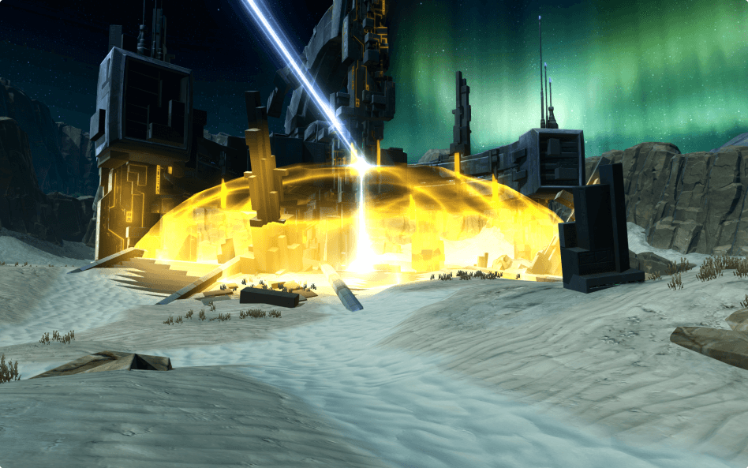
A pylon explosion, that also marks the start of the next round
Each round has an associated multiplier, which is ×3 for the first round and grows by 1 in each successive round, up to ×9, when the warzone times out and ends anyway.
Orbs
Let's start with the orbs, which are the simpliest to explain. There are 4 orb stands in the middle, a 5 second interaction is required to claim one of them. Once you claim an orb, you must carry it to a pylon under your team's control in order to score it. You can only carry one orb at a time, and using escapes causes it to be lost. If you carry an orb to the pylon, your team's hard score is increased according to the formula 3 × round multiplier + 3, so orbs scored in the first round get you 12 points, then 15, then 18, then… you get it. Note that this is a one-time pad to your score and does not accumulate in later rounds.
Suppose you are facing a superior team, you are both just under 600 points but the enemy is way ahead in kills. Because orbs go straight to your permanent score and the game ends as soon as one team's permanent score reaches 600, you can pad your numbers with orbs and push yourself over 600 permanent points even if the enemy team has a higher temporary score.
If the enemy team is way ahead in numbers, one-time padding your score with orbs will not save you.
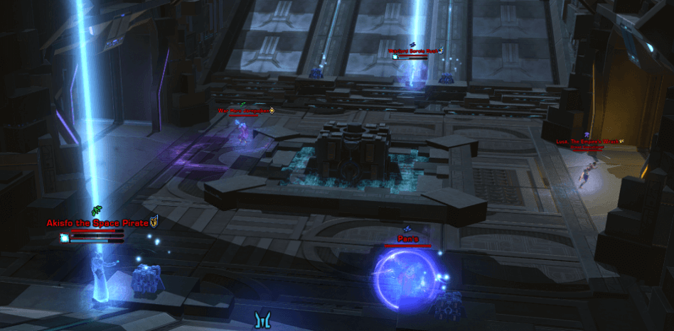
Enemy team gathering orbs
Pylons
Having a pylon, by default, gets 75 points for your team. (This value is constant and does not depend on the round multiplier.) You can capture a pylon at any point during a round, as long as you hold it at the very end, when they lock down, it's yours, along with all of its benefits. Simply delaying the enemy team from capturing a pylon does not lower the score they get. Also, having a pylon gives you points for deaths, which is where it all starts to get interesting.
Deaths
First of all, I'm saying deaths here, because score is given by enemy deaths, not kills. If someone from the opposing team dies in the explosion, your team gets a point for it, even if you did not deal the killing blow.
So, uh, yea, the scoring. Every round ends and the next one begins at the moment the pylons start exploding (not when the lockdown begins). (This also implies that deaths by the explosion count for the next round.) Let's define the round score for every round to be the number of enemy deaths in that round, multiplied by the round multplier. This roughly means that for each death you get some score equal to the round multiplier.
When a pylon is captured, your team not only gets 75 points for the pylon itself, but gets every round score, from the beginning of the game, up to and including the current round, added to your soft score. (If you happen to hold both pylons, everything is doubled.)
With formulas:
Round multiplier = round number + 2
Round score in round n = enemy deaths in round n × round multiplier
Cumulative round score in round n = round score in round n + cumulative round score in round (n - 1)
Orb score in round n = number of orbs scored in round n × (3 × round multiplier + 3)
Final score in round n = final score in round (n - 1) + pylons held × (75 + cumulative round score in round n) + orb score in round n
Turning soft score into hard one
Your soft score is dependent on holding the pylons: if you, for example, hold one pylon, but lose it to a stealther, you will not get any points in that round, except for any orbs you have carried back to your pylon. At the end of each round the soft scores become hard and cannot be lost from that point on, no matter what.
The 7th round
The warzone ends in round 7, i.e. when the multiplier is ×9. This round has a premature ending: the warzone will end sooner than the round finishes and, more importantly, your soft score will not be converted to hard when the match ends. That means if the enemy team is ahead by the end of round 6, you only have a short time window to pad your numbers with some orbs. Nothing else you do will matter.
A worked example
Let's see a hypothetical example about how a match might look like:
Round
Multiplier
Shadow Squad
Reaper Squad
Pylons held
Deaths
Orbs scored
Round score
Cumulative round score
Total score
Pylons held
Deaths
Orbs scored
Round score
Cumulative round score
Total score
1
×3
1
6
2
3
3
102
1
1
0
18
18
93
2
×4
2
7
1
0
3
273
0
0
0
28
46
93
3
×5
1
6
4
5
8
428
1
1
2
30
76
280
4
×6
0
10
0
18
26
428
0
3
0
60
136
280
5
×7
1
7
2
14
40
591
1
2
2
49
185
588
6
×8
1
8
0
24
64
730
1
3
0
64
249
912
While the example is not based on a concrete game, results like this are not at all impossible or even uncommon. While Shadow Squad was busy taking orbs and even got both pylons in one round, they died a lot, which, in the end, made Reaper Squad victorious, even though they were unable to take a pylon – twice. If the match were like this, Reaper Squad would win. If, however, Shadow Squad chose to gather just one orb in round 6, getting them 27 points, they would bump their hard score over 600 (to 618), and the match would end before the end of the round, making Shadow Squad victorious.
The scorecard
Strategies
The "casual" tactic
In a casual game of Hypergates teams do not bother with pylons too much. One unlucky person from each group go at the beginning of each round to the left (as seen from the spawn area) pylon, captures and hopefully guards it, while the rest of the team goes to middle to zerg. There's usually no coordinated action here, maybe some players will try their luck at the enemy pylon, but for the most part there's just deathmatching at the middle.
The "ranked" tactic
The standard tactic relies on both teams just going to the middle to deathmatch while letting the other one capture "their" (the one to their left) pylon. This tactic, however, fails if the enemy team breaks this silent agreement and does not let you capture (and is strong enough to pull that off); you let them get one pylon for free and you end up with nothing. If you expect a game like this, you have to plan preemptively. While a stealther might go ahead alone to stall, note that against a knowledgeable team no stealther will last long. Even those operatives you see trolling for a whole round can (and by good players, will) be made short work of. In these case the safest tactic is to split 4-4 right at the beginning, trying to at least stall both pylons, preferably capturing one, while not letting the enemy team have anything.
The most important part of doing this right is to send a group to both sides that can stall the enemy long enough even if eventually they will need backup from the other side; or, if they get absolutely wiped, it should take so many people from the other team that the other half of your team can do the same on the other pylon.
Stalling
Stalling means continously interrupting the other teams' capture attempts in order to prevent them from getting a pylon in a round. Sometimes stalling is necessary to prevent the enemy team from winning, but it's a risky thing to do: if you give them too many kills while trying to stall, especially if it's not the last round of the game, it can and often will fire back. Basically there's no need to stall in earlier rounds, and should only be done if your team is vastly superior to the enemy. If not, continuously playing for 2 pylons will just get you a loss.
Playing stealth & defending
Ancient Hypergates is one of the two maps, along with Civil War/Yavin, that greatly encourages stealth play. Unlike in Voidstar and Civil War, the capture time of the pylons here is 6 seconds, which is 2 seconds shorter than the durations of the mezzes of stealth classes. What this means is that if you're guarding solo, you have to be even more careful to not get "sapcapped"; it can easily lose the round or even the match for your team. Needless to say, stealthers make the best guards here too, simply because they can delay longest for reinforcements to arrive, and can waste well over 30 seconds of an intruder's time without being in real danger of losing the pylon.
What I see a lot of times is that a stealther mezzes the guard (or the person trying to capture), but then does nothing. As mentioned above, simply delaying a capture does not help your team. If you mez the guard, expect them to call for reinforcements, and also expect those reinforcements to arrive. Also expect that you're not good enough to hold off 3-4 attackers throughout the round. If you don't expect your own teammates to come help you stall, your lone stalling is likely a waste. If you decide to not let them capture, at least start capturing yourself. Maybe if you can take it, your mates will come to your aid.
As a stealther, it makes more sense to let them capture first and take the pylon later. Remember, this comes with no penalty, as long as you eventually take it. What makes this approach better is that this way you leave the enemy team less time to come and try to take it back, unlike when you get into the action at the very beginning, in which case they have the full round to wipe you out.
The basic outline of sapcapping is the following:
If the defender is not in stealth, use Mind Trap or Sleeping Dart on them. You obviously cannot do this if you don't know where they are.
Immediately start capturing. If the guard is a stealther, they will likely mez you. Wait this out and continue trying to cap.
If the guard has attacked you, use Whirlwind or Flash Bang on them and start capturing as soon as possible.
If they still had a stun breaker, use Force Cloak or Cloaking Screen to get out of combat and go back to step 1. They will not have any ways to break this and you won.
Some classes make an easy target, especially with the short capture time on the pylons, but others can make you work for your money, or send you home without achieving anything.
If you have the 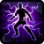Backlash utility, stand right on top of the pylon and make sure to keep Static Barrier on yourself at all times. If anyone starts capturing, just right-click the Static Barrier buff and the stun effect will trigger, even while you're otherwise CC'ed. This will interrupt their capture and place them in combat. Be careful with Force Shroud and 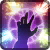Dark Stability, as these negate your Backlash.
If you don't have Backlash, a good idea is to guard as far as possible (60+ meters) from the pylon, while keeping your Phase Walk placed in a way that allows you to get back in range quickly. Distance is your advantage, because you can cover it faster than any other class. Just make sure to not go close, or you will have to waste your breakers.
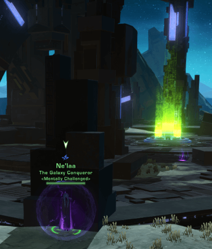
Guarding this way makes it very hard to get sapcapped by one or even two people. Notice the placement of Phase Walk.
As a stealther, if you see anyone trying, use Mind Trap on them. Doing this alone will buy you 16 seconds. If you have to reveal yourself and go close to the pylon, make sure to have Force Shroud or Dark Stability active. Throwing in a Low Slash from range also works, but do not forget about its travel time. Try to stay in combat and avoid CC until the resolve expires then stealth out and start it all over again.
Try to avoid guarding as a Juggernaut. If you have to anyway, keep your distance and hide behind some cover you can easily move out of to Saber Throw if you have the time (remember the travel time on it) or Force Charge if you don't. Vengeance is in a slightly better position because of Brawn. Once you're in range, Mad Dash, Intimidating Roar and Force Push are your tools. Do not fool yourself though: against a competent offnoder a Juggernaut will get capped sooner than later.
Fury Marauders have 6 seconds extra immunity upon using Force Crush thanks to their Gravity Vortex passive. The Blood Ward utility provides 6 seconds of stun immunity on activating Saber Ward, and, if the attacker is not experienced, they will likely waste a stun during those immunities. Oh, and you have Force Camouflage to disappear for some added CC immunity.
Almost as good as Assassins, except better. While Operatives still only have one stun breaker, Concealment has a total immunity when using Exfiltrate. Using this along with your selfheals, your 30 meters range Rifle Shot and your repertoire of CC's, Operatives, if played properly, are one of the hardest classes to cap by a single attacker.
As a Sniper you want to sit at maximum range to make timing challenging for your attacker. Your Spotter stacks will help you see attackers even when they're in stealth. If they still manage to CC you, using Entrench immediately after your breaker will grant CC immunity for a good while. Note that AoE DoTs (Orbital Strike and, if you're Engineering, Plasma Probe) will no more interrupt any captures.
As with Juggernaut, try not to guard as a Mercenary. You have no CC immunity (aside from Rocket Out, which is very hard to time right) and only one breaker. If you do happen to be guarding, use range and cover to your advantage. Try putting Explosive Dart on your target before you expect them to mez or disappear, it interrupts captures when it blows up 3.4 seconds later; it fools lots of people.
You're lucky to be a Powertech, because Shoulder Cannon can be used while incapacitated, which allows you to interrupt captures even if you get CC'ed. The proper position to guard with a Powertech is right on top of the pylon, same as a Sorcerer with Backlash. Be sure to have it off cooldown, but do not activate it until you get a visitor. If you have activated it anyway, make sure its charges have enough time remaining to cover the round. If you do not have Shoulder Cannon, try not to guard.
Tips and Tricks
Deaths matter. Do your best to not die.
Do not play for two pylons unless your team is absolutely superior or you are about to lose otherwise. Going there getting yourselves farmed one by one is a good way to lose.
Either stall through an entire round or do not even attempt it.
Be careful when defending the pylon, capture time is only 6 seconds.
It's better to sapcap late in a round, as it gives less time for your enemies to react.
Because deaths matter, mark the weakest link in the enemy team and farm them ruthlessly.
You can push/pull people out into the explosion for an easy kill. Just be careful not to end up dying in it yourself.
Unless you guard/offnode, run in packs. Picking fights alone will only get you killed.
Huttball
Do you like trolling? Plain, hardcore trolling? Enter Huttball. The Hutt version of this carry-the-flag type of game is where you can pull your dirtiest, most underhanded tricks and get away with them. No other warzone offers this many opportunities for legal griefing and trolling, and while it has its weaknesses and strongly prefers some classes over others, pushing and stunning people into fire traps never gets old.
Currently there are 3 Huttball maps, The Pit on Nar Shaddaa, the Quesh Huttball Arena and the Skyshredder on the scenic world of Vandin.
The name of the game is the same on both maps: grab the ball from the middle and carry it over to the enemy's goal line 10 times within 10 minutes. (If at any point the leading team has a 6 score advantage, the game will end prematurely.)
Traps
Everyone will tell you the most fun part of playing Huttball are the traps, so let's get straight to them. All traps on all maps follow the same rotation, they are dormant for 6 seconds then become active for another 6, repeat ad infinitum. The traps deal their damage every 0.5 seconds.
The Acid pools are a simple kind of obstacle found on both Nar Shaddaa and Vandin. They deal low (5% of your HP) periodic damage but slow anyone caught within down to 30%. It is possible to avoid the slow if you manage to jump through them while avoiding their ticks.
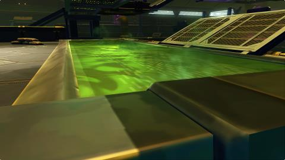
Nar Shaddaa Acid Pool
Fire traps deal very high (25% of your HP in Vandin, 30% in Nar Shaddaa) damage per tick and will very likely kill you unless you manage to get out of them - fast. They're found both on Vandin and Nar Shaddaa.
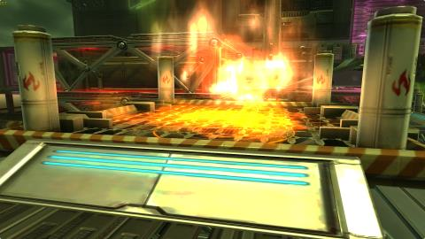
Vandin Fire Trap
Shock traps deal moderate (20% of your HP) damage the first time you get caught in them (i.e. their damage does not keep ticking), but apply an unbreakable stun for 6 seconds which ignores Resolve. With some unfortunate timing and the help of an extra few stuns or roots, it's possible that you'll get stuck in these for 2 or even 3 cycles. Vandin only.
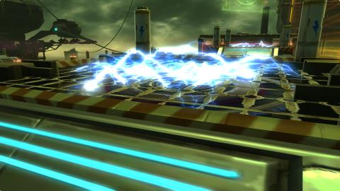
Vandin Shock Trap
Poison gas traps apply a DoT that ticks 8 times for high (15% of your HP) damage and slow you down for 50%. As these traps guard the scoring zones, it's possible to score with the ball before the damage eventually kills you. Vandin only.
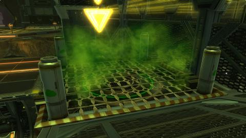
Vandin Poison Gas Trap
Acid pipes, the only kind of traps in Quesh, deal insanely high (30% of your HP) damage and slow you to 20% of your speed, plus apply Hindered (the same as Electro Net), making any escape almost impossible.
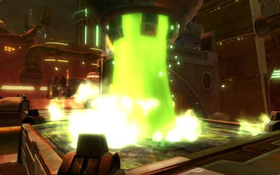
Quesh Acid Pipe Trap
The best way to not end up in some trap is to try not going too close to them unless you are whitebarred, in which case you cannot be knocked into them. If you have to pass a trap without any stun immunity, try to make sure you use some speedup. Because the game engine is bad, it's quite possible that by the time they stun you, you'll be out of the trap and not get caught in it.
The ball
The ball always spawns on the single ballstand in all the maps. First one to click gets it. It appears as a buff on your buff bar if you have it, along with a big colored beam on you to make it obvious for everyone where the ball is and who has it. The color of the beam is the same as the color of the ball carrier's team (gold for Frogdogs/purple for Rotworms). One person can hold the ball for 45 seconds in one go, after that Giradda gets bored and the carrier gets blown up. If the ball carrier dies, the closest enemy will get the ball or, if the game can't find a suitable carrier for any reason, it resets back to the stand.
Grabbing the ball
Grabbing the first ball is about who has the team with a Marauder. The speedup from Predation will help you get to the ball faster than anyone that doesn't have access to this buff. Other than that, Snipers are the fastest to the ball if they're willing to sacrifice their Imperial Preparation for it; otherwise Operatives are still the best to make it to the ball first.
Go straight for the ball, do not go around the acid pit in the middle zone. As noted above, you can avoid the slow by jumping through it. Also, do not use stealth on your way to the first ball; enemies are on the other side of the map, who are you hiding from? (Especially don't use Infiltrate, slowing not only yourself, but the whole group.)
Going for the first ball in The Pit
Go to the left corner of the spawn barrier, from where you can immediately drop down to the lower level of the map, where the ball is. This will take a considerable amount of your HP, so be ready to pop at least a Warzone Medpac, but the drop alone will not kill you. Then use some speedup to get to the ball ASAP.
Use either of the two vents right past the forcefield to get a boost ahead. Once you land, go forward and drop down to the lower catwalks, and go for the ball.
For later balls, you can prepare in advance for grabbing it. Usually you want to either CC or knockback whoever is there from the enemy team, because once the ball spawns, it's more like a dice roll who gets it. To counter this, you can use some class-specific tricks. The next ball spawns exactly 5 seconds after the previous one is scored.
Note that anything below is required only if you don't have full Resolve. If you're whitebarred, you can just stand there and take it easy, because it provides complete CC immunity. For this reason try not to whitebar anyone on the enemy team when trying to catch a new ball.
Note: Currently there's a bug which causes immunities to not work properly, causing knockbacks to work when they shouldn't. The exact circumstances causing it are unknown, but it sometimes affects at least Force Barrier and Shadow Operative Elite.
You can place Phase Walk right next to the ballstand to have a quick way back to the ball. Phase Walk does not change your camera view, i.e. you'll be looking exactly the same way you were looking before the teleport. Before teleporting back turn your camera in a way that allows you to click fast and easily.
An easier way for a Sorcerer to grab the ball is to just stand at the ballstand and use Force Barrier, which makes you immune to everything. Unlike with stealth, you can grab the ball while Barrier is active, but this will cancel the ability.
Using Force Shroud you can make yourself immune to F/T attacks, which is mostly what you need to grab the ball. Camp there with your Shroud on and click the fastest. Note that you cannot grab the ball while in stealth, but you can use Force Cloak to get some Force Shroud (if you have the Shroud of Madness utility), immediately leave stealth and enjoy. You can also just charge in from stealth, use Overload to knock everyone away. This, however, doesn't work if people have physics immunities. Instant Whirlwind is also a nice toy to troll people with (requires the Haunted Dreams utility).
If you are using Vengeance, the immunity from Brawn will be of great help if anyone from the enemy team is around; you just have to time it right, so that the immunity is up when the ball appears. Mad Dash also provides immunity to control effects for the short time it is active, but you have to use it just at the right time. You can also use Intimidating Roar to just mez everybody for easy grab, if they don't have any immunities.
Fury Marauders have access to the Gravity Vortex passive, which provides 6 seconds of CC immunity after using Force Crush. With Force Camouflage you can disappear and pop up at the right moment to grab the ball. As a Marauder you also have access to Intimidating Roar to mez everyone around you.
Being the general all-around troll class, Operatives, especially Concealment, have some tricks for ballgrabbing too. Not only your Flash Bang is an AoE mez (unlike for Snipers, which remains single-target), using the 1.5 second immunity from Exfiltrate (coming from the Shadow Operative Elite passive) you can just roll in and take the ball like a boss.
Probably the best class for the task, as a Sniper you have it easy. With Entrench up, you are immune to everything, and you don't even have to time it. Cover Pulse, with its ridiculously large knockback and gratis root can clear out some competition, while Diversion not only pops enemy Snipers out of cover, the accuracy debuff might cause hostile stuns/knockbacks to fail.
Sorry to say, Mercenary isn't a particularly good ballgrabber. Hydraulic Overrides makes you immune to physics, but not to incapacitating effects. Rocket Out provides CC immunity for its duration, so technically it can be made to work like Exfiltrate, but it's relatively hard to do so. If you decide to go this way, make sure you don't jet into the ballstand, because if the camera bumps into it, you won't see the ball and therefore won't be able to click it. The correct way to do this is to jet in a way that you end up standing next to the ballstand.
If there's a prize for being the worst ballgrabber, Powertech gets it. Hydraulic Overrides provides physics immunity, but that's it. Carbonize is a nice AoE hardstun, but having no access to CC immunity, the class is relatively easy to counter.
Running the ball
If you have the ball, you can hold it for 45 seconds straight before you explode and it resets. The most important part of being the ball carrier is doing your best to not get killed while you're holding the ball. This not only includes not being killed by conventional means, but also by not getting pushed/pulled and stunned into traps. ("Firepulls" range from hard to impossible to avoid. Experienced firepullers, especially Assassin tanks, who also have access to a knockback and can pull from stealth will usually score at least a few kills with this technique.)
Note that it is not possible to use your stun breaker while carrying the ball. This means you should do your best to prepare for spending 8 seconds straight in a hardstun. It also makes it important for your teammates to use their Guard, heals and other peeling tools, or else there's a high chance you'll not make it.
With the short carry limit time and the unbreakable stuns, it's close to impossible to go from pickup to goalline all alone, unless the enemy team just really doesn't care about the game.
Tanks aside, the best ball carriers are classes with high mobility and good survivability: Juggernauts (Force Charge and Intercede, with Force Charge being reset on using Force Push) and Snipers (Entrench, Covered Escape and Seek Cover). Mercenaries, with Hydraulic Overrides, Rocket Out and simply the amount of defensives they have also make good carriers if utilized properly.
If possible, try not to play ball carrier on an Assassin, Sorcerer, Powertech (unless a tank) or Operative. Sorcerers easily make the worst ball carriers in the whole game, having no leaps or immunities other than Emersion. Powertechs are better because of Jet Charge, but still not the best. Operatives are only good for short-distance carrying where they can just Exfiltrate, otherwise they're relatively easy to tear apart by a high damage group. Same goes for Assassins: Force Speed, Phantom Stride and Force Shroud help for a short while, but they're easy to burn down.
In general, try to stay out of line of sight as much as you can, though this is not easy in the Huttball maps. If you are focused hard and don't have serious team support, you will probably only have time for a quick pass before you get killed. It's up to your teammates to peel for you and go ahead and position themselves for passing.
Because the maps are symmetrical, it's not that hard to get lost in the heat of the battle, losing sense of direction and simply walking into your own goalline. (Happened to everyone, right? Surely did to me!) While most people are not aware of it, the game gives you hints about which way the ball should go. Note that these marks are relative to the ball, so if the enemy team holds it, the markers are showing the direction for their team, even to you! Good news is, if you happen to walk into your own goalline, nothing will happen, the enemy team won't get a point for it.
The minimap
If you look at the minimap during a Huttball game, you will see purple and gold arrows on it. These indicate which direction should the ball be carried for scoring. If you're lost, look at your minimap!
Direction marks
In Queshball, there are markers all over the place. Look on the ground and on the fences of the ramps: they all have small colored arrows showing you which way to go for the score.
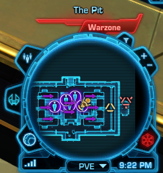Notice the arrow pointing in the direction you have to go to score.
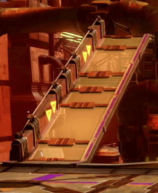Direction marks in the Quesh Huttball Arena.
Throwing the ball
Throw the Huttball automatically appears on your temporary ability bar when you have the ball. If you want to keybind it (which you should!), you'll have to keybind the first slot on that bar.
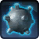
Throw the Huttball
Instant
Cooldown:5s
Range:30m
Throws the Huttball to the ground target. Closest player (friendly or enemy) to target will catch the Huttball. Must be carrying the ball to throw the ball.
The ball throw is ground targeted, allowing for two ways of passing; choose between them according to your personal preference and the situation. You can press the ability once and click on the ground where you want to pass with the target reticule or you can select a teammate and quickly press the ability twice. This will pass exactly to their current position. (This, by the way, works for every ground targeted ability, not just ball passing.)
Passing has a travel time, i.e. there will be a delay before your intended recipient gets the ball. If the person you're trying to pass to is moving, you should pass a bit ahead of where you see them. This is especially important if said person is being followed. If you pass exactly to a moving target that's being chased, because of the delay, the pursuer will get the ball.
Anyone (even enemies) is eligible for a pass if they're a) within the target area and b) are not stunned, in stealth or using Force Barrier. When a pass lands, the closest eligible person gets the ball. When expecting a pass, try to stand still. If you see an enemy being passed to, and you have the opportunity, stun them or try to knock/pull them out of the target area before the ball lands. (Assassins and Operatives with knockback can do it from stealth.) There is an additional mechanic for intercepting passes: leaping to the target of a pass, even if the passed by name, would often give the ball to the leaper. (It's not clear whether this an intended mechanic or simply a bug, but it often works.)
Incapacitated (stunned) targets cannot receive passes. If you have the option, prefer passing to people in stealth as they're at a much lower risk of being intercepted. This, of course, doesn't matter if the receiver is protected by Resolve. While being passed to, watch out for stuns and have your breaker ready. Remember that you cannot receive a pass while in stealth; you must reveal before the ball lands.
Passes not caught by anyone cause the ball to reset. You can use this to your advantage: if you're about to die, and there's noone to safely pass to, you can just throw it somewhere away and not let your enemy have it.
Scoring
Scoring is as easy as walking past the enemy goalline while holding the ball. There's one thing to consider when scoring, and apparently most people don't care about it: does your team have mid? Is there anyone at the middle that can get the next ball? Countless times it has happened to me that I helped someone score, tried to run back to catch the next ball but didn't make it in time, because the person I helped scored just too quickly. If your score is safe, you are not in danger of dying immediately and/or getting pushed/pulled down, you might as well give your team a few seconds before crossing the line. While this seems like a trivial thing, almost nobody does or even thinks about it.
In the Pit there are 16 fire traps for you to die painfully in, evenly distributed between the upper and the lower catwalks. There are also 2 acid pools in the middle zone, but these are mostly important for their slowing effect, as the damage they do is minimal. 4 healing stations can be found in the 4 corners of the map, 2 powerups in the northern and southern corners and 2 speedups in the pits. The air vents at the middle punt you up in the air in a supposedly random direction, and can get you anywhere from right back in the middle to right into a fire trap.
The way players of each team must go to score are marked with arrows, while the dotted lines show the most common pass opportunities.
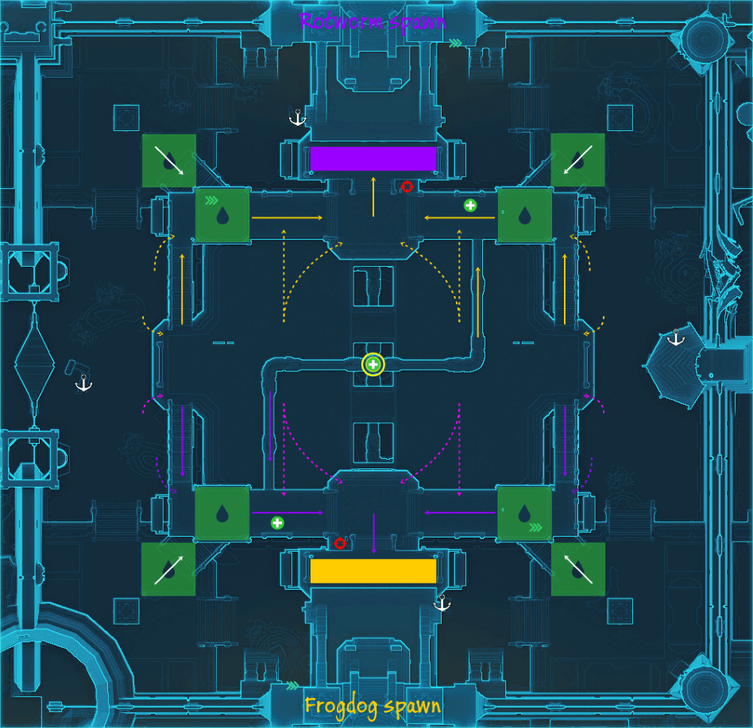
Map of the Quesh Huttball Arena
The Queshball arena is a 3-level structure, making it hard to fully capture it in one image. The spawn areas lead to the top level catwalks, with a pipe connecting the opposite sides. 2 healup mods are found on the middle level, with 2 extra being both on the pipe in the top level and the one just under the middle one. 8 acid traps (which, unlike in Nar Shaddaa, do hurt) cover the 8 ramps leading between the levels. Grapple tables on the bottom floor can be used to quickly get back to the middle floor, but they do not work if you're carrying the ball. The bottom level, along with the ballstand, also has 4 speedup mods that you can try to get as the ball carrier, as they make scoring an insanely lot easier.
The Skyshredder is the most complicated of all the available Huttball maps. It is somewhat similar to the Pit, but there are some significant differences to it, the most important being the addition of Grapple Points.
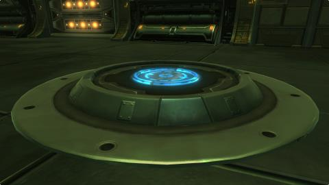
Vandin Grapple Point
There's a Grapple Point on both sides at the goalline and 2 down in the pit below, allowing for some quick getting back up on the walkways. (Walking over a Grapple Point removes you from stealth, watch out for this if you're lurking around the endzone waiting for your mates to pass.) The Gravity Grapple ability is granted to you on your temporary bar, right next to Throw the Huttball and is only usable when over these Grapple Points or when falling.
Yes, falling. Unlike other Huttball maps, the sides of the Vandin map are open, providing ample opportunity to be knocked down. If this happens, you have a short time window to use the Gravity Grapple and pull yourself back up.
There are two air vents just as you leave your spawn area, you can use these to avoid all the traps on your way back to the middle. There are two other vents in the middle part of the map, near the ballstand, but these only throw you back to one of 3 random positions on your team's side of the map, meaning they are mostly for combat escapes and as a carrier you cannot gain a quick advantage by using them.
Tiebreaking
If the score is even when the timer expires, tiebreaking is based on who currently has, or who has had the ball last. If you're near the end of the match, it's better to hold on to the ball and run, than let the enemy have it. Try to avoid passing at this point as those can get intercepted; the obvious exception is when you're at an immediate risk of dying.
Strategy
There's no one winning strategy but there are some basic guidelines you should follow to ensure your victory.
Controlling the middle and getting rebounds
Few random teams understand the importance of getting hold of the middle area. Lots of the time whichever team grabs the ball is the one to score. Just letting your enemies take the ball and get a headstart while you're running back chasing after them is a good way to lose any hard-fought advantage.
Running ahead
Unless the enemy team is really bad, getting past all the traps and getting the ball in all by yourself is likely going to be problematic. If your teammate has the ball, it is crucial that you run ahead and position yourself for an easy pass. Even this requires some situational awareness: you might get to the best spot for passing ever, if the ball carrier cannot make it far enough to get to you. Also, if you tank or heal the ball carrier and they are under focus, do not run ahead to position and abandon them, because they might be shred to pieces in the time they are without your help.
In Nar Shadda: you can go right to the goalline and expect a pass there (if you stand on the very edge, as shown on this picture, you can pass across the pit):
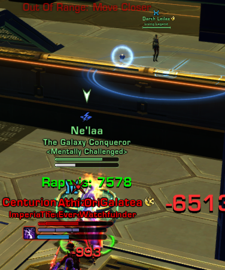
Or something similar in Quesh:
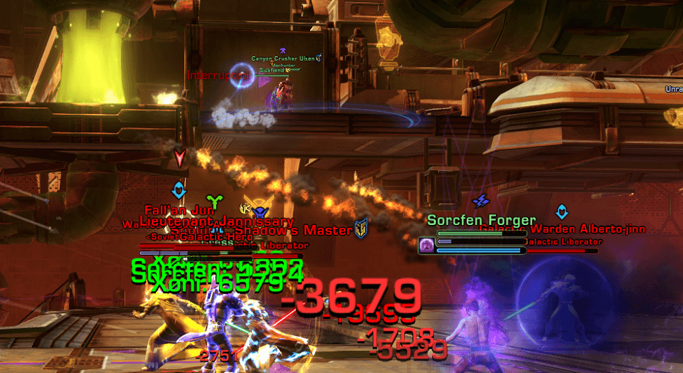
(Ab)using stealthers
Having a stealther in your team can make it a great lot easier to score, because they can just stay invisible until they're passed to, then reveal, catch the ball, use some speedup and score. A pass chain with a well-played stealther is almost unstoppable.
Most stealthers will stand at the middle part of the top catwalk, between the two fire traps. Waiting there is quite effective, after receiving the pass it's easy to score (just run down the ramp) and in most games it works well. Against an organized team, however, that's quite a bad spot, for multiple reasons:
Everyone uses it, which makes it expectable,
The area is small, making it easy to find you there with AoE,
The fire traps are very close and there's a good chance you'll end up in one of them at some point.
A better one I mostly use is the other part of the upper catwalks, like this:
This is better because:
The area is bigger,You can be on both sides, it's harder for the enemy to cover it,Fire traps are somewhat farther,You can still score with a single speedup, without having to run through fire traps,It is guarded by fire traps, which, depending on their timing, might block your enemies' way to you,Operatives can get to the ballstand from here with just 2 rolls.You can score while avoiding the last trap. (Using Force Speed or Exfiltrate)
Just like on Nar Shadda, you can stand on any edge and expect a pass, but there is one particularly good position to be in, and that's the end of the upper ramp:
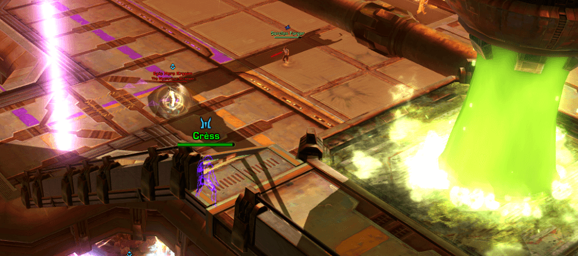
The reason for this position being good is because it's possible to pass to someone standing there directly from the lower level, which makes it very easy to score against a bad team. Note that good teams will cover the respective corners with AoE and knockbacks, depending on which way the ball carrier is going, so it's like standing on the middle of the top ramp in Nar Shaddaa: it's expectable. This is how it looks from the passer's side:
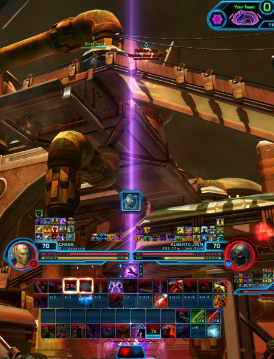
Tips and tricks
Grabbing the ball is just as important as running it. Don't just focus on scoring, also pay attention to the middle area and who will get the rebounds. If you only have one person there and 5 enemies, there's a good chance even your mate can get the ball, they will be murdered on short notice. If you can, you should also wait a bit with scoring to give your mates some time to get back to the middle. The ball respawns in 5 seconds.
Run ahead, but not too much. If the ball carrier cannot pass to you, because they cannot reach you or you're out of line of sight, it doesn't matter if you're in the best position anyone has ever found.
Be careful with resolve. Putting an enemy ball carrier on full Resolve is an immense help to them. Try to use your stuns on the ball carrier only when you expect to burst them down quickly, or if they're in a trap.
The traps activate according to a set pattern and are active (or inactive) for 6 seconds.
Do not use Infiltrate on your way to the ball. It only slows everyone down and there's no way any hostiles could be anywhere near. Now that I think of it, do not use it at all in Huttball.
Preadation helps your team immensely, spam it whenever you can!
If you have the choice, wait with Extrication until your target has full Resolve. This way they can't be knocked down immediately after you pull them.
Translocate is probably the most useless ability any discipline has, but in Huttball it can work wonders.
Whenever you're passing to someone that's moving, do not pass to them by double-tapping but manually place the target reticule ahead of them in their path. Otherwise there's a good chance they'll just walk out of your pass.
Try passing to people on full Resolve as they cannot be stunned/pushed/pulled out of your pass.
Do not forget to drop stealth when you're being passed to or you'll not get the ball.
You can push/pull people out of passes.
If people are often not exactly where you see them on the screen, try rooting them before attempting any knockbacks. This forces their position to resynchronize and will greatly improve your accuracy.
When you have options to go multiple ways and both have traps on the way, head towards the trap that's currently active. By the time you get there it will likely deactivate.
The best time to pull people to traps with either Force Pull or Grapple is when you see the traps start their warmup animation. This will give you enough time to get out yourself but more than likely have your target die in it.
Novare Coast
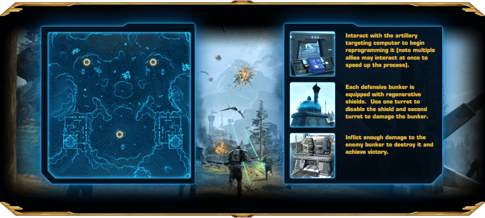
Novare Coast, a warzone taking place on Denova (the same planet as the Explosive Conflict operation) involves 2 teams, 2 shielded bunkers and 3 turrets for the teams to capture in order to destroy the enemy bunker.
Capturing turrets
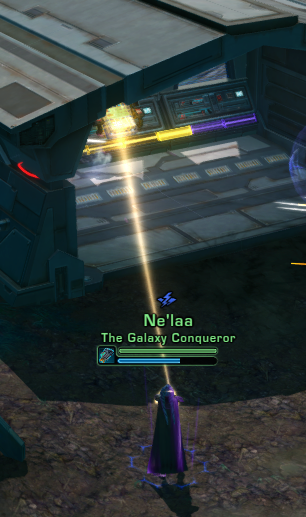
To capture a turret, you have to click the button in the middle of the bunkers. This initiates a 18 second channel which, if completes, the turret is yours. The first 3 seconds are spent as warmup and do not actually do anything. If get interrupted during this time, your attempt will have no effect. Once the warmup is over, you will start to gradually capture the turret. Turret capture has an internal cooldown of 5 seconds, i.e. this amount of time must pass between two successive capture starts.
In the beginning of the game all 3 turrets start as untaken and their ownership is shared 50-50% between the two teams. Unlike in other games, turrets don't have to be captured in one go; if your capture goes uninterrupted past the warmup time, you will get a partial capture, propotional to the amont of time you were successfully capturing for. Multiple people can capture at the same to speed it up.
You take ownership of a turret once your team fully captures it. You cannot partially hold a turret; while you can have it half-captured, it will keep scoring for the owning team until you fully take it. Also, if you are the currently owning team, and the enemy partially takes your turret, you can also capture it back.
You do not need to kill all enemies to capture a turret. Mostly you can just "spam cap", meaning multiple people, preferably spread out all over the area, from your team tries to capture at the same time. Well-spammed captures are extremely hard to interrupt properly.
You can see a capture in progress on the screenshot above. Note that you do not have to be inside the bunker to take it. Also notice the yellow-purple bar under the button inside the bunker: it shows what % of control each team has over the turret. The yellow/purple beam connecting you to the button does not appear during the warmup time, so you have to watch out for the castbars on people to interrupt in time. There's also a sound effect that plays when someone clicks the button, which is one of the quickest ways to be alerted to somebody trying to take your node.
For your team to damage the enemy bunker (i.e. start scoring), you need to have control of 2 of the 3 turrets at the same time. One turret alone will not get you anything. (Holding 3 speeds up the process, but has the same overall effect as 2.)
The scorecard
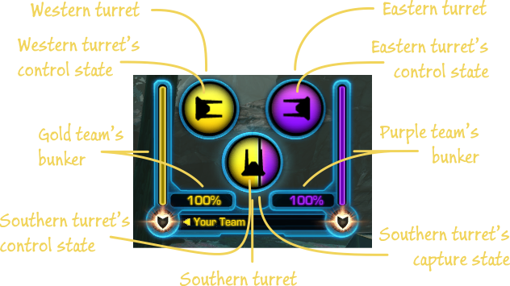
The three big circles on the scorecard represent the three turrets. The way the turrets facing (the black icons in the circles) show you which bunker they're currently firing at, while the background shows how much control the teams have over the turrets. (This is the same as the colored bar in the bunker under the button.) On this example scorecard, the side turrets fire at the opposing teams' bunkers and are fully controlled by the respective teams, while the southern one is still neutral with the gold team being closer to take it.
Strategy
The usual strategy for playing Novare Coast is one person (who will also be guarding) goes to the home side turret, while the rest of the team goes to the southern one. If you have stealthers (works with non-stealth, too, but obviously they will be visible), they can try to interrupt the capture on the enemy home side turret. This is a timing race and it's very easy to be late. Sometimes you can try going to the other home side turret with multiple people, trying to quickly overwhelm the poor guard and capture it quickly, but the success rate of this tactic is questionable.
If possible, try to hold your home side turret and the southern one. The enemy-side turret, while no different scoring-wise, is harder to hold than either the middle or your home side one because you will have a longer way to run there if you die and have to respawn, while the enemy can get there in a lot shorter time.
Tips and Tricks
Do not wait for nodes to be cleared of enemies before you try taking them. Because the captures are incremental, even if you only make a little progress, it adds up.
You do not need to be inside the bunker to take it. You can initiate a capture anywhere in line of sight within the marked half-circle on the ground.
Multiple people can capture at the same time, it adds up.
The first 3 seconds of a capture are warmup and do not do anything.
It's mostly pointless to try sapcapping alone in this warzone. You will only get 2-3 ticks done.
The capture is, unlike on other maps, on the GCD.
Stay near the bunker so you can notice and interrupt people trying to cap inside. Keep your eyes on people that are repeatedly trying to cap.
When you see your teammates trying to take a node and they have enemy reinforcements incoming, do your best to stall those to buy more time.
Use the math, Luke! If you're 6 verus 2, start wondering where the rest of them might be and move accordingly.
Look at the minimap! If a defender calls one incoming, there's no need for 4 of you to go help.
Odessen Proving Grounds
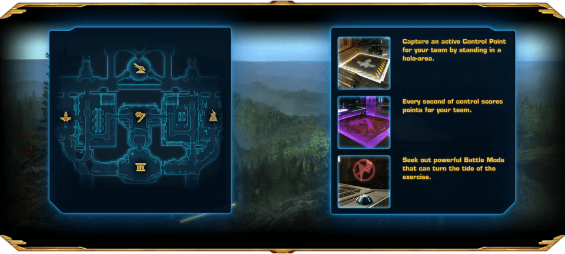
OPG is a king of the hill type map training strategic teamwork to your post-KotFE Alliance. The main objective is to get to 600 points before the enemy team by holding key areas of the map.
Rounds
The Odessen warzone is divided into rounds of 90 seconds each with approx. 10 seconds downtime inbetween, allowing you to position yourself for the next round. Objectives activate at the beginning of a round and deactivate at the end. Not all of them are active in any single round.
Spawns and respawns
Teams start in the northern two spawn areas in the beginning of the match. Respawns work in waves, which means that every 10 seconds every fallen player is automatically revived at one of the 4 spawn areas. While there are no doors preventing you from rejoining the battle, you will have to wait lying dead on the battlefield for resurrection.
Objectives
There are 5 objective areas in Odessen: the northern Turret, the eastern Tech Lab, the southern Artifact Chamber, the western Hangar and the central Cantina. They all function the same way. Holding a captured objective for 1 second will give your team 1 point for every second of ownership. First team to reach 600 points first wins. Note that not all 5 objectives are active all the time: those that are inactive are greyed out on the scorecard and do not affect the game, unless you activate them with a mod (later on that). Which objectives become active in a round is totally random, with one exception: the side ones (east and west) do not activate in the first round (unless you use a green mod on them).
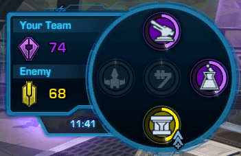
The scorecard in Odessen Proving Grounds.
The scorecard shows you the scores for each team, the remaining time of the match and the state of the nodes, along with the mods they have applied on them.
Capturing and holding
To capture any objective, make sure nobody from the enemy team stands in them for 3 continuous seconds. This makes pushes/pulls very valuable in this warzone. Also, if you leave the objective area for more than 3 seconds, it will go back to neutral. This is different from how objectives work in other warzones, where you only lose already taken objectives if an enemy player actively takes them from you. Also, stealthers being in stealth do not count as being in the objective zone, even if they physically are inside. When it comes to defending, it does not matter if you get CC'ed, as long as you're inside. The only two things that matter are that you a) must be inside. b) must not be in stealth.
Battle mods
Along with the 5 primary objective points, there are also 4 battle mods that spawn at 4 fixed locations on the map. In order to not overwhelm the game with mods, if some mods are still unused, the same number of mods will not spawn. To claim a mod, you simply have to walk over it. While some people theoreticized that you can get a specific mod if you walk over its pickup point at the right time, I've not been able to verify this. (But I might be doing it wrong.) Which mod you get seems random, so don't bother too much if you get one you don't really want.
There are 4 battle mods in Odessen:
Activate: allows you to activate an inactive objective, making it captureable.
Speedup: makes the objective tick twice as fast, but also expire faster. This means that applying a speedup mod to a node will make you have to guard it for a shorter time, but does not get you more points overall.
Multiply: makes the objective give double points at each tick.
Deactivate: deactivates an already active objective, immediately stopping it from giving out any more points. While you can use a deactivation mod on your own nodes, only do it if you are certain you'll lose it and there's nothing else you can do to prevent the enemy from getting it.
Mods can win you a game, so knowing which one to use and when makes one the key differences between a good and a bad player in Odessen.
Do not use mods late in a round, except speedup. This should be obvious, but apparently it isn't. All mods have their effect until the end of the round, so, obviously, the later you use them in a round, the less time there is till the end of the round, and the less benefits you gain. If you have 10 seconds remaining and you use a multiplier, you get 10 additional points. If you have 80 seconds left and you use the same mod, you get 80 additional points. Activation mods are a little worse in this respect, because once used, there's some additional time before the node becomes active, plus you need 3 seconds to capture it, so the time loss is greater here. You can use a speedup as late as you prefer, because it does not affect the total number of points you get from a node.
Mods stack. You can have multiple mods activated on the same node and they will all have their effects. This means if you have 2 multiplier mods active on the same node, you will get 4 times the points you'd normally receive. The scorecard is a little bugged here (surprise!) and cannot show when 2 mods of the same kind (i.e. two speedups or two multipliers) are effective at the same time, but the scoring itself will work properly.
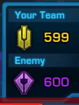
Only when the score is close speedups matter. When both teams are around 600 points, the question is who will cross it first. I said speedups only make you have to guard for a shorter time, but otherwise won't affect the game. Well, mostly. When racing to 600 points, a speedup works like a multiplier. Let's say you have 1 node with a speedup and 590 points, while the enemy team has 592 points, also one node and no speedup or multiplier. Because nodes provide points at the same rate, the enemy team would win. But because you will get your points twice as fast from your node as they will get from theirs, because the game will end before both teams can fully harvest their points, the end result will be 600-597 with you winning.
Only ever deactivate your own node if you are about to lose it. If you're guarding with a disabling mod and you are getting attacked, and you cannot hold the node, it's better to deactivate than letting the enemy team take it, along with the mod.
Using battle mods
Mods will give you 2 abilities on your temporary ability bar. The first one allows you to use the mod while standing in an appropiate objective area, while the second one allows you to pass it and needs you to have a friendly player targeted. The only way to destroy a mod is to jump down into the abyss in the northern part of the map. Like in Huttball, if you get killed with a mod, the enemy closest to you will receive it.
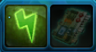
While in other warzones any kind of interaction with objectives can be interrupted by simply getting attacked, this is not true for mods. Mod usage can only be interrupted by regular interrupts (the dedicated interrupt skill, abilities that have interrupt as their secondary effect (leaps) or CC that either incapacitates or dislocates). This leaves abilities and effects that provide immunity to those extremely overpowered: a Sniper using Entrench can only be dealt with another Sniper using Diversion and then interrupting, Force Shroud's only counters are Low Slash (only available to Deception Assassins), Sniper's hardstun, Maim, which is a Ranged attack, but only if the Assassin is not whitebarred, because they both rely on incapacitation, and Warriors' Force Charge. A Sorcerer using Polarity Shift or having stacks of Enduring Bastion (the shield after Force Barrier) while whitebarred is unstoppable. Marauders' Gravity Vortex (in the Fury discipline) provides total immunity and can be used even without full resolve.
The map
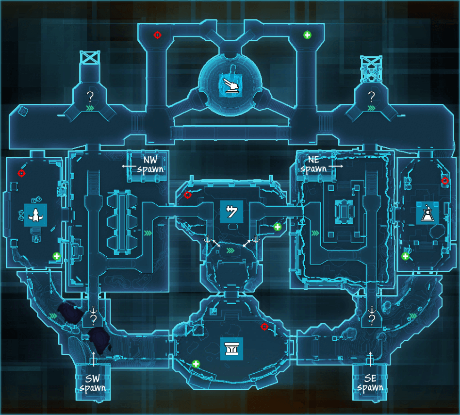
The objective areas in Odessen (marked with the light blue squares) are evenly spread around the map in the four cardinal directions and in the middle, while the battle mods spawn in the diagonal corners of the map. Each objective has a healup and a powerup around it, with all of the mod spawns, the catwalks and the platform above the cantina having a speedup too. The southern mod spawns have a grapple hook above them, allowing you to get there from anywhere within 30 meters if they are in your line of sight. The grapple hooks in the middle of the map work differently and only allow you to grapple to them from the upper platform, preventing quickly moving from the middle to the southern objective.
Using the grapple hooks
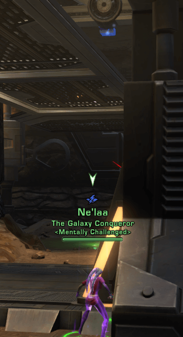
You can grapple up to the catwalk from here if you click the grapple hook at the top.
Few people know that the 2 grapple hooks in the southern part of the map (that allow you to grapple up to the mod spawns on the catwalks) can be used from anywhere within 30 meters if they're not blocked by something in the way of your camera. This means you can also grapple up from the doorway, saving you a considerable amount of time when going for the mods.
Strategy
Because of the random nature of Odessen (both in terms of which nodes will be active and which mods you'll get) often the game will be in favor of one team over the other, though with good teamplay you can often minimize these effects.
The single most important part of your strategy here is to spread out after each round to be prepared for any combination of activating nodes. Remember, you only have a few seconds to get inside the objective areas before they get captured, so be prepared to make your move as soon as the round starts. Like in other maps, looking at the map helps you decide where to go, which area isn't covered by your team. Running in a big gank squad is a good way to lose Odessen.
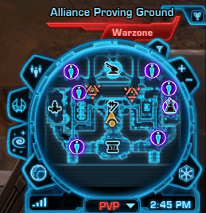
Proper distribution between rounds.
Dealing with enemy mod carriers
You see an enemy carrying a battle mod, what do you do? Kill them of course, so you get their mod. (A fair bit of warning here: if you are carrying a mod yourself and you kill an enemy with it and you're closest, you'll lose your mod when you get the one they were carrying. So, if you have a multiplier, you might not want to kill that guy with the speedup.) But what if you can't kill them, or not fast enough?
Activation mods
Lots of people, when they see someone from the enemy team trying to activate a node, try to interrupt them using the mod. Well, that's stupid. The correct strategy is letting them use the activation mod, and then charge in and denying them the capture. (Remember, there's a ~6 second window between the time the mod is used up and the area gets captured.) This way they gained nothing, but wasted their mod. Conversely, if you are being followed, save your activation mods for the next round or pass them to someone else.
Speedup mods
As they are mostly useless, just let them use it.
Multiplier and deactivation mods
Remember, these mods are more effective if used early. If you deactivate an area with like 3 seconds remaining from the round, you achieved little. Similar with the multiplier. My recommendation for these mods is that you let your enemies use them in the last quarter of the round. This way your loss/their gain is minimized, yet they wasted their mod and won't have it for next round, when they could reap more benefits from it.
The Voidstar
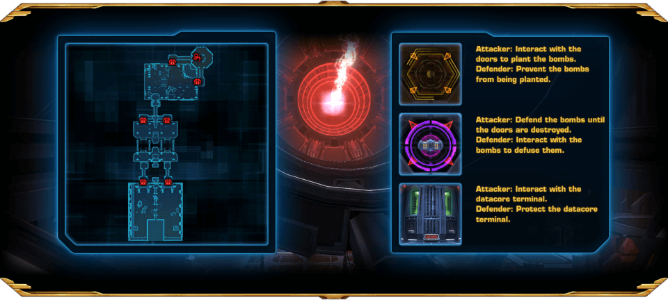
The setting for the Voidstar warzone is an abandoned Imperial ship whose datacore contains valuable information and must be downloaded.
The map and objectives
Voidstar has 2 rounds: an attacker and a defender round, each lasting a maximum of 7 minutes and 30 seconds. Which team starts as the attacker and which as the defender is random.
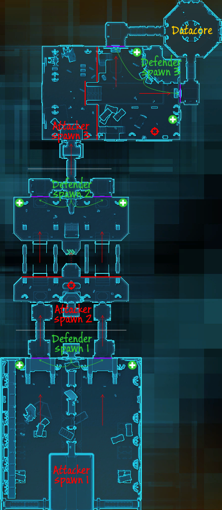
There are 6 checkpoints that can be breached sequentially. 3 of those are pairs of doors where your team must plant bombs and defend them until they blow, 2 are forcefields your team has to lower and the last one is the final datacore itself.
Unlike in other warzones, once you lost an objective, there's no redemption. Teams get points for the number of checkpoints they got through, up to 6. At the end of the game, the team having passed more objectives wins. If neither team gets past through the first pair of doors, whichever team has less deaths wins. At this moment it is unclear to me what the tiebreaker is when both teams pass the first door.
As usual, you have to right-click the marked area on the doors to start planting a bomb. This takes 6 seconds and can be interrupted by taking non-periodic damage. If you manage to plant, a 15 second countdown will start, during which the bomb can be defused. Defusal can be done by the defending team (by right-clicking the bomb), but it only takes 3 seconds. Bombs that got defused or didn't have time to blow up before the end of the round do not count towards victory. Successfully blowing up either one of a pair of doors will remove both, allowing you to move forward on both sides.
Between the 3 pairs of doors you will find force fields that have to lowered. The first force field (over the reactor core) has 2 parts, the second (in the cargo bay area) has 3. These don't have any defusal: once the channel is complete, you're free to proceed. Also note that force field controls only open their respective part of the force field (unlike doors, where if you blow one up, the other opens too).
The datacore is just a 1 second channel on either of the 2 terminals in the final room and only serves to finish the warzone.
The leap across the reactor chasm
As you might have noticed, there's no forcefield in the middle part of the reactor core. Since the two banks of the reactor chasm are close (less than 30 meters apart), if someone from the defender team is kind enough to stand on the edge (where the speedup mod is), it is possible to leap to them. Doing this with a, say, Juggernaut makes it pretty obvious, but stealthers have leaps too. This means players standing there can be leapt to while in stealth, without them noticing. While the 2nd pair of doors are not possible to open before either of the bridges are extended, (ab)using this opportunity, if available, can still provide a good few seconds of headway.
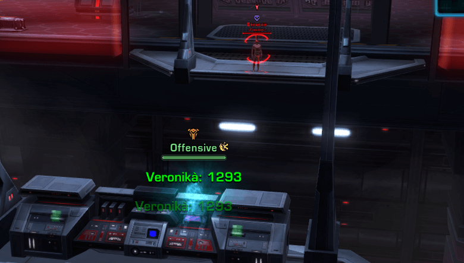
Free leap in stealth from here… Notice the forcefields are not down yet.
Dying and respawns
Attackers have unlimited respawns, while the defender spawn areas have a 30 second door timer. If you die as a defender, you will respawn before the next pair of uncaptured doors. If the corresponding force fields are not down yet, the respawn door is always open. It, however, closes the moment one of the force fields gets lowered. Using this as a defender you can be ahead of your enemies when they're trying to run ahead.
Strategy
As a defender, you don't really have the luxury to resort to any specific tactics, you will have to adapt to whatever the attacker team comes up with. If you are guarding alone, try to make the offender waste their time by making them go out of their way to CC you. The best way to guard is slightly behind cover, with an easy way to step out of it and attack if needed. This forces them to come close to you to CC, while losing time getting back to the door. If you have attacks usable while CC'ed, the best course of action is to guard right on the door.
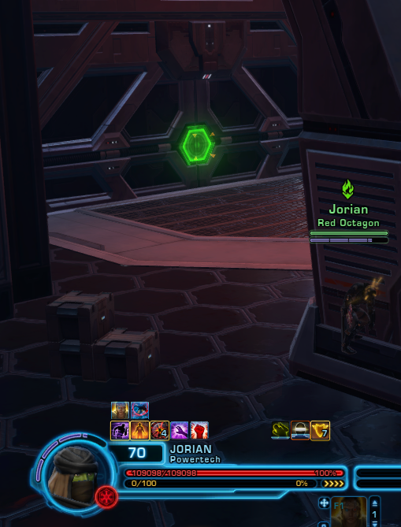
The mez is about to expire, yet the enemy hasn't even started planting yet.
When it comes to attacker strategies, these are the most common ones:
All to one side: Well, this is simple. Everyone goes to attack the same side, trying to wipe out the whole enemy team.
Even split: Roughly half the team goes left and the other half goes right. The point of doing is pressuring both sides, forcing the enemy team to split and hope that you can overwhelm one side at some point.
All to one side with stealther: Everyone goes to one side, except 1-2 stealthers that try to surprise the guard on the other side.
Lure and cap: This makes for some scenic captures if you can pull it off. The basic observation here is that you do not need to kill the other team to capture a door; it's enough if they just don't look. Every now and then you can try to plant the bomb when you expect them to have their attention elsewhere: who knows, it might work. (Sometimes it does.)
If you managed to plant, use AoE attacks to most effectively prevent any defusal attempts. Because the defusal timer is short (3 seconds), do not leave anyone alone to guard a bomb. If it was a solo stealther that managed to plant, do your best to get there and help them interrupt.
Once a door has been breached, the best tactic is for someone fast (Operatives really shine here) to go ahead and try to get the next set of objectives while the rest of the team is actively slowing the defenders. If your team does this properly, it's very easy to just speedrun from the first door to the datacore, ensuring yourself a quick win. As a defender, be on the lookout and when some objective is lost, get to the next one as fast as you can.
Peeking into the enemy spawn
Like in Novare Coast, here you also have the option to abuse a camera bug and look into the defenders' spawn. (This only works for attackers.) To do this you have to zoom your camera out and move your mouse over the boxes on the bridge. You can see how to position in this clip:
Peeking into the defender spawn. Move your cursor over the boxes on the bridge to see some of the enemies in there.
Arenas
I gave arenas their own section because they are very different from the other, objective-based warzones. While the other ones are 8vs8 and have some kind of objective, arenas are 4vs4 deathmatches: team with the last man standing wins. Arenas are also the only kind of maps in ranked, but since this guide is not aimed at people that are trying to do ranked, I'm just going to talk about arenas in a regular setting.
Basic rules
As mentioned above, arenas are 4vs4 deathmates, with each round won by the team with the last person standing. Each round is 5 minutes, there are no ties. Scoring is best-of-3, i.e. you need to win 2 rounds to win the match. Unlike in other warzones, all your ability cooldowns are reset between the rounds, so don't save them for the next one. When it comes to an arena, it's usually a really bad idea to die with any cooldowns left unused.
Like objective-based warzones, arenas are not won based on who has the highest DPS at the end. The goal is to outlive your opponents, not outdamage them. Your awesome numbers mean nothing if you just end up being dead. Because deaths are punished far more harshly than in other types of games, teamwork, especially peeling becomes an even more important factor here. If you're the one being focused, do your best to run and survive. If you see the enemy team trying to destroy your teammates, help them by guard, taunts, knockbacks, mezzes, whatever you have at your disposal. Most offensive cooldowns have a short effect: a well-placed AoE mez can ruin them for good.
Tiebreaking
Just like in other warzones, there are no ties. But what happens if, even after the 5 minute timer, both teams have some standing members?
Enter acid.
Acid is the tiebreaker mechanic for arenas. It is some ugly green goo that keeps creeping in from the edges of the arena to the middle, giving everyone it touches a debuff that prevents stealth, takes away 1% of their HP every second and increasingly decreasing their healing received: this effect gets 2% stronger every second. The health damage passes every kind of mitigation, including Sorcerers' Force Barrier. The closer you are to the middle of the map, the later you'll be affected by acid.
Sudden Death Toxic Contamination
Instant
You are suffering ill effects from exposure to noxious chemicals.
Oh, the animation for the acid is not in sync with where the border of the acid currently is.
Choosing targets
Choosing targets is an important, if not the most important part of teamplay in arenas. Sure, you might get so bad enemies that it does not matter at all who you kill first, but assuming equal skill, kill order can mean the difference between a win and a loss.
It is very difficult to give general advice about how to proceed in arenas, because the optimal strategy can depend on so many things, like the roles each team has, the classes, the specs, and last but not least player skill. Any recommendation below is overwritten by the single most important rule of choosing targets: always go for the weakest link.
People inexperienced with arenas will usually laugh if you say to go for the tank first, but this is still a quite common tactic in team ranked games. The reason for killing the tank first is that tanks have more ways to protect allies than to keep themselves alive. Specifically, tunneling the tank works around Guard and Taunt mechanics (as those only work for others), only leaving the tank's natural mitigation to help them survive. This, however, is only recommended if both teams have a healer and you expect the tank to swap guard. Bad tanks can simply be ignored.
Ok, well, this is easy to understand. If you take down a healer, they won't heal their team anymore, making them easy kills. No brainer, right?
The problem with going for the healer is that the good ones (especially Sorcerers) can kite and survive quite long, and while eventually you should be able to kill them, it gives their team ample time to return the favor.
Offense is the best defense, and this is why you should go for damage dealers first, if they're not protected by a good tank. There's no one definitive kill order list for various classes, but this should give you a general idea:
Powertech: The thing with Powertechs is that they don't really have any defensives, but they're dangerous when left unchecked. Just burn them down.
Assassin: Besides their few seconds of Force Shroud, Assassins are trivial targets. While they will Force Cloak out of combat to regenerate, this essentially leaves their team one man down.
Juggernaut: The thing about Juggernauts is that they'll be constantly in your face and wreck you if you don't do something about them. Being melee, Juggernauts can be kited, though Brawn (a passive in Vengeance) and Unstoppable (utility) don't make that easy. While Juggs eventually die after a sufficient amount of tunneling, hence their high priority, their defensives are still noteworthy.
Mercenary: The Mercenary's defensive arsenal sounds impressive, but, if played against properly, it really isn't. You can get around Responsive Safeguards by using AoE or DoTs, everything else can be tunneled through. Plus tunnelling a Mercenary really ruins their damage.
Operative: Good Operatives are rare and the class in general is pretty easy to kite. Their damage is also unimpressive, therefore ending up being low priority targets.
Sorcerer: Somewhat like a Mercenary, but their escape/kiting mechanics are somewhat better and their damage is weaker, making them less of a priority than Mercs.
Sniper: Not only they're immune to gap closers while in cover, they have an impressive arsenal of both kiting and damage reduction tools. Their selfheals are mediocre, but their overall tankiness, damage and control potential are not.
Marauder: Equipped with an arsenal of survivability tools and some of the best burst in the whole game, Marauders are insanely hard to deal with. They can negate an absurd amount of damage, and with a little luck Force Camouflage allows them to reset combat.
Tactics
Tunneling
Tunneling means focusing on only one target with tunnel vision, basically ignoring/kiting/CC'ing everything else. If you play in a PuG, this is the one you'll most likely be able to pull off.
Hardswap
While an important and good tactic, I do not recommend doing hardswaps in PuGs. Hardswaps require good coordination and work best with voice communication to pull of perfectly. Sure, you can agree in things like "swap on guard", so that when your current target receives guard, you switch to the other one, but proper hardswapping also includes CC'ing tank/healer at just the right time and also synchronizing burst rotations, so you can swap right at the moment when you all have your biggest burst available.
Pressure
Pressure tactics rely on spamming AoE attacks to do very high numbers and overwhelm the enemy. A pressure group is both easier and harder to play against than a tunnel/hardswap one. The disciplines used for this kind of play have less burst than hardswap ones, so there's less chance of someone just disappearing from the being-alive club with no prior notice. The AoE damage done by them will sooner or later become overwhelming and it's a race against time to get a kill before they melt your whole group alive.
Utilizing CC
As I mentioned, I generally do not like the idea of going for the healer first, even if they're unguarded. That's only partly because they're hard to kill; healers have an easier way to deal with them, and that's CC. Remember that Sorcerers have 2 breakers (if they sacrifice Force Barrier for this), Operatives and Mercenaries only have 1. If you have 4 players with 8 second mezzes and you use it perfectly, you can have a healer incapacitated for 50% of the fight. That's a lot.
Glossary
Buff: A positive effect.
Debuff: A negative effect.
GCD: Global cooldown. The minimum amount of time (baseline 1.5 seconds) that must pass between regular ability activations.
CD: Cooldown. This is used in two meanings. It can both refer to the time until an ability becomes usable again, or to offensive/defensive abilities that give offensive/defensive benefits to their user and usually have a long cooldown.
DCD: Defensive cooldown. Defensive ability.
Rotation. The optimal sequence of ability activations that maximize effectiveness.
CC: Crowd Control. Any kind of control effect in general, most commonly stuns.
Hardstun: Incapacitating effect that does not break on taking damage.
Mez/sap: Incapacitating effect that breaks on taking damage.
Breaker: The ability that purges any CC effects.
Whitebar: Control immunity from a filled-up resolve bar.
Cap: Capture. It is used both as capturing and getting captured, i.e. losing some objective.
AoE: Area of Effect. Abilities that affect targets in some area, contrary to single-target ones.
DoT: Damage over Time. Periodic effects that give a debuff to their target and keep damaging until they expire.
HoT: Heal over Time. Like DoTs, but for heals.
LoS: Line of Sight. When used as a verb, it means to move behind some object that provides LoS.
DPS: Damage per Second.
HPS: Healing per Second.
PuG: Pickup Group. A group that was assembled by the game via random matchmaking. This is used both to refer to random players and the groups themselves.
Premade: Opposite of a PuG, a group that was assembled before queueing.
Thanks to
For making this guide possible by providing invaluable data, resources, being my lab rats for experimenting with various mechanics, pointing out errors and suggesting improvements, in no particular order: